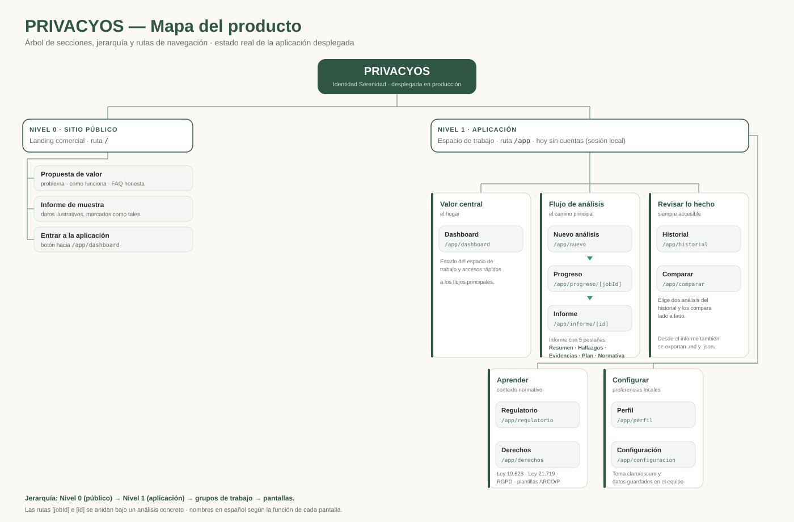
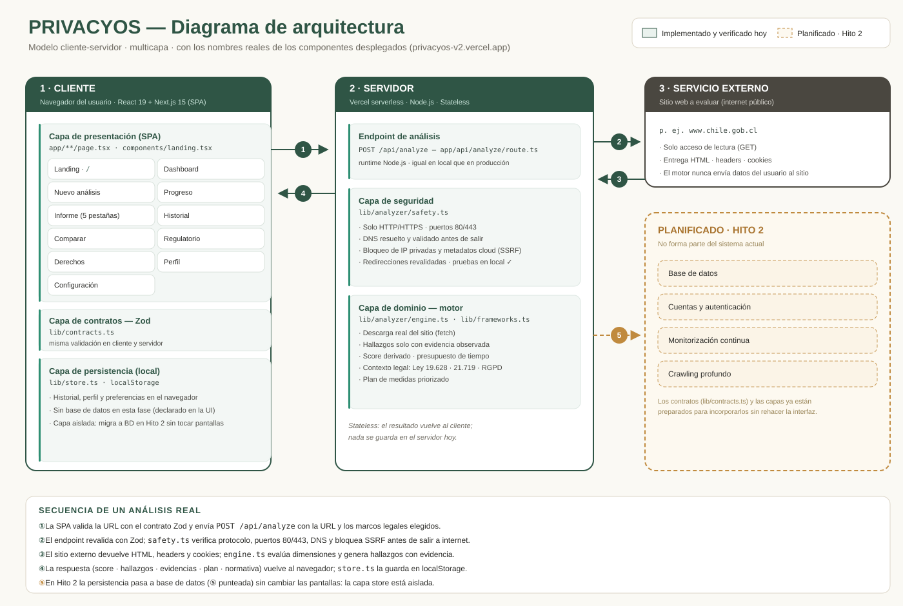

Información dispersa
Las señales técnicas, la documentación y las tareas de revisión suelen consultarse por separado.
PRIVACYOS transforma señales técnicas observables en hallazgos explicables y prioridades de revisión.
Equipo: Catalina Romero · Melisa Ibáñez · Simón Salgado
Las señales técnicas, la documentación y las tareas de revisión suelen consultarse por separado.
Un equipo necesita distinguir qué observó, qué significa y qué requiere revisión humana.
Las recomendaciones deben conectarse con señales observables, no con promesas absolutas.
Las afirmaciones de prevalencia deben respaldarse con las fuentes verificadas que se citen en el informe.
PRIVACYOS organiza evidencia técnica, explicación y próximos pasos en un flujo comprensible para equipos de producto, tecnología y privacidad.
Consultar señales técnicas disponibles en un sitio público.
Relacionar hallazgos con la evidencia que los sustenta.
Orientar la revisión posterior sin sustituir el criterio experto.
Acceso al espacio de trabajo.
Ingresar una URL pública.
Consultar el estado del proceso.
Revisar hallazgos y evidencia.
La navegación debe comprobarse en el producto desplegado antes de la exposición.
Recorrido recomendado: Dashboard → Nuevo análisis → Informe → evidencia de un hallazgo.
Si el navegador bloquea la incrustación, usa los botones anteriores. Prepara una URL pública y un resultado de respaldo.

El mapa muestra la jerarquía del sitio público y de la aplicación, además del flujo principal de análisis.

La interfaz envía la solicitud al endpoint de análisis; el servidor valida, aplica controles de seguridad y procesa señales técnicas limitadas.
Rutas, interfaz y endpoints integrados en una aplicación web.
Tipado y validación de estructuras de datos.
Consistencia visual y rapidez de iteración.
Despliegue accesible para la demostración.
Revisa señales técnicas acotadas y presenta hallazgos sustentados en evidencia observable.
No realiza crawling exhaustivo, no garantiza detectar todos los riesgos y no certifica cumplimiento legal.
Persistencia compartida, autenticación y seguimiento continuo requieren implementación y validación.
Arquitectura y presentación.
Investigación, documentación y propuesta.
Frontend, integración y revisión.
PRIVACYOS ayuda a empezar una revisión de privacidad con señales técnicas organizadas y explicaciones comprensibles.